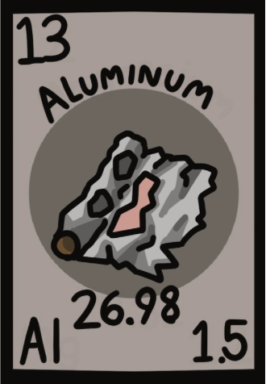
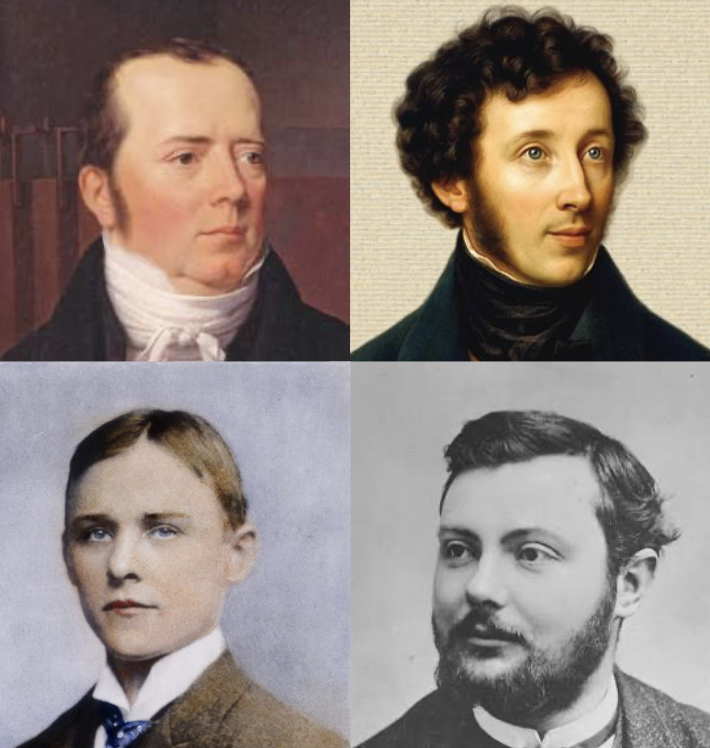

Atomic Number : 13
Atomic Mass : 26.98
Proton Number : 13
Neutron Number : 13
Category : Post-transition Metal
Aluminium was first discovered in 1825 by Danish scientist Hans Christian Ørsted, who produced a small amount of aluminium metal from aluminium chloride. In 1827, German chemist Friedrich Wöhler improved the process and obtained purer aluminium. Later, in 1886, Charles Martin Hall and Paul Héroult independently developed the Hall–Héroult process, which made aluminium production much easier and cheaper. Since then, aluminium has become an important metal used in transportation, construction, packaging, and many everyday products.

State at room temperature: Solid Colour: Silvery-white Odour: Odourless Taste: Tasteless Density: 2.70 g/cm³ Melting point: 660.32°C Boiling point: 2519°C Solubility: Insoluble in water Molecular form: Usually exists as Al atoms
Aluminium is a reactive metal that easily reacts with oxygen to form a thin protective layer of aluminium oxide (Al₂O₃). It reacts with acids to produce aluminium salts and hydrogen gas: 2Al + 6HCl → 2AlCl₃ + 3H₂ Aluminium can react with strong bases to form aluminates. It is resistant to corrosion because of its oxide coating. Aluminium can form compounds with many non-metals, such as chlorine, to produce aluminium chloride (AlCl₃). It acts as a reducing agent in some chemical reactions.
Aluminium is the most abundant metal in the Earth's crust. It is not usually found as a pure metal because it reacts easily with other elements. Aluminium is mainly found in minerals such as bauxite, which is the main ore used to produce aluminium. It is also present in compounds like aluminium oxide and aluminium silicates found in rocks and clay.
Aluminium is widely used because it is lightweight, strong, and resistant to corrosion. It is used in aircraft, cars, and other vehicles to reduce weight and improve efficiency. Aluminium is also used to make cans, packaging, kitchen utensils, and building materials such as windows and roofs. It is used in electrical wires because it is a good conductor of electricity. Aluminium is also important in electronics, smartphones, and many everyday products.


Aluminium is the most abundant metal in the Earth's crust. Aluminium was once considered more valuable than gold because it was difficult to extract. Aluminium is very lightweight but still strong, making it useful for aircraft and vehicles. Aluminium can be recycled many times without losing its properties. About 75% of all aluminium ever produced is still in use today because it is highly recyclable. Aluminium does not rust like iron because it forms a protective layer of aluminium oxide. Aluminium foil is extremely thin but can still block light, moisture, and air. Aluminium is the second most widely used metal in the world after iron.